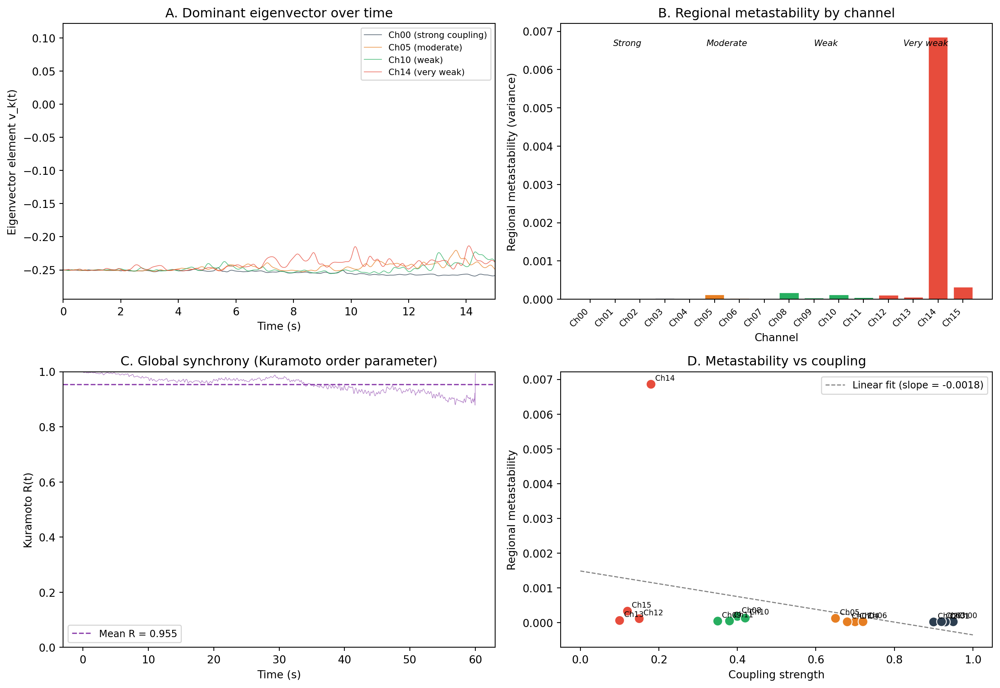

import numpy as np
import matplotlib.pyplot as plt
from scipy.signal import hilbert, butter, filtfilt
# ── 1. Simulation parameters ────────────────────────────────────
rng = np.random.default_rng(42)
n_channels = 16
sfreq = 256 # sampling frequency (Hz)
duration = 60 # seconds (longer = more stable estimates)
n_samples = sfreq * duration
times = np.arange(n_samples) / sfreq
freq_osc = 10.0 # shared oscillation frequency (Hz)
# Define coupling strengths for each channel.
# Channels 0-3: strongly coupled to a common reference oscillation
# Channels 4-7: moderately coupled
# Channels 8-11: weakly coupled
# Channels 12-15: very weakly coupled (nearly independent)
coupling = np.array(
[0.95, 0.93, 0.90, 0.92, # strongly coupled (low metastability)
0.70, 0.65, 0.72, 0.68, # moderately coupled
0.40, 0.35, 0.42, 0.38, # weakly coupled (high metastability)
0.15, 0.10, 0.18, 0.12] # very weakly coupled
)
channel_names = [f"Ch{i:02d}" for i in range(n_channels)]
# ── 2. Generate coupled oscillatory data ─────────────────────────
# Common reference oscillation with slow phase drift
ref_phase = 2 * np.pi * freq_osc * times + 0.3 * np.cumsum(rng.standard_normal(n_samples) / sfreq)
ref_signal = np.sin(ref_phase)
# Each channel = coupling * reference + (1-coupling) * independent oscillation + noise
data = np.zeros((n_channels, n_samples))
for ch in range(n_channels):
# Independent oscillation with its own phase drift
ind_phase = (2 * np.pi * freq_osc * times
+ 2.0 * np.cumsum(rng.standard_normal(n_samples) / sfreq))
ind_signal = np.sin(ind_phase)
# Mix reference and independent signals
data[ch] = (coupling[ch] * ref_signal
+ (1 - coupling[ch]) * ind_signal
+ 0.3 * rng.standard_normal(n_samples))
print(f"Simulated data shape: {data.shape} "
f"({n_channels} channels x {n_samples} samples)")
# ── 3. Band-pass filter and Hilbert transform ───────────────────
# Filter to a narrow band around the oscillation frequency
lo, hi = 8.0, 13.0
b, a = butter(4, [lo, hi], btype="band", fs=sfreq)
phases = np.zeros_like(data)
for ch in range(n_channels):
filtered = filtfilt(b, a, data[ch])
analytic = hilbert(filtered)
phases[ch] = np.angle(analytic)
print(f"Extracted instantaneous phase for {n_channels} channels")
# ── 4. Build the phase alignment matrix and extract eigenvectors ─
# Downsample time points for computational efficiency.
# We compute the alignment matrix every 10 ms (100 Hz)
step = max(1, sfreq // 100)
time_indices = np.arange(0, n_samples, step)
n_timepoints = len(time_indices)
eigenvector_series = np.zeros((n_channels, n_timepoints))
for ti, t in enumerate(time_indices):
# Phase alignment matrix: A_ij(t) = cos(phi_i(t) - phi_j(t))
phi = phases[:, t] # phases at time t
phase_diff = phi[:, None] - phi[None, :] # pairwise differences
A = np.cos(phase_diff) # alignment matrix
# Eigendecomposition (eigh returns eigenvalues in ascending order)
eigenvalues, eigenvectors = np.linalg.eigh(A)
dominant = eigenvectors[:, -1] # eigenvector for largest eigenvalue
# Sign continuity: flip if inner product with previous is negative
if ti > 0 and np.dot(dominant, eigenvector_series[:, ti - 1]) < 0:
dominant = -dominant
eigenvector_series[:, ti] = dominant
print(f"Computed dominant eigenvector at {n_timepoints} time points")
# ── 5. Compute regional metastability ───────────────────────────
# Regional metastability = temporal variance of each eigenvector element
regional_ms = np.var(eigenvector_series, axis=1)
print(f"\nRegional metastability per channel:")
for ch in range(n_channels):
group = ("strong" if ch < 4 else
"moderate" if ch < 8 else
"weak" if ch < 12 else "very weak")
print(f" {channel_names[ch]} (coupling={coupling[ch]:.2f}, "
f"{group}): MS = {regional_ms[ch]:.6f}")
# Also compute global metastability via the Kuramoto order parameter
R = np.abs(np.mean(np.exp(1j * phases[:, time_indices]), axis=0))
global_ms = np.var(R)
print(f"\nGlobal metastability (Var of Kuramoto R): {global_ms:.6f}")
print(f"Mean Kuramoto R: {np.mean(R):.4f}")
# ── 6. Visualisation ────────────────────────────────────────────
fig, axes = plt.subplots(2, 2, figsize=(13, 9))
# Panel A: Eigenvector dynamics for selected channels
ax = axes[0, 0]
t_plot = time_indices / sfreq
for ch, colour, label in [(0, "#2c3e50", "Ch00 (strong coupling)"),
(5, "#e67e22", "Ch05 (moderate)"),
(10, "#27ae60", "Ch10 (weak)"),
(14, "#e74c3c", "Ch14 (very weak)")]:
ax.plot(t_plot, eigenvector_series[ch], linewidth=0.6,
color=colour, alpha=0.8, label=label)
ax.set_xlabel("Time (s)")
ax.set_ylabel("Eigenvector element v_k(t)")
ax.set_title("A. Dominant eigenvector over time")
ax.legend(fontsize=8, loc="upper right")
ax.set_xlim(0, 15) # show first 15 seconds for clarity
# Panel B: Regional metastability bar chart
ax = axes[0, 1]
colours = (["#2c3e50"] * 4 + ["#e67e22"] * 4
+ ["#27ae60"] * 4 + ["#e74c3c"] * 4)
bars = ax.bar(range(n_channels), regional_ms, color=colours, edgecolor="white")
ax.set_xlabel("Channel")
ax.set_ylabel("Regional metastability (variance)")
ax.set_title("B. Regional metastability by channel")
ax.set_xticks(range(n_channels))
ax.set_xticklabels(channel_names, rotation=45, ha="right", fontsize=8)
# Add group labels
for x, label in [(1.5, "Strong"), (5.5, "Moderate"),
(9.5, "Weak"), (13.5, "Very weak")]:
ax.text(x, ax.get_ylim()[1] * 0.92, label,
ha="center", fontsize=8, fontstyle="italic")
# Panel C: Kuramoto order parameter over time
ax = axes[1, 0]
ax.plot(t_plot, R, linewidth=0.5, color="#8e44ad", alpha=0.7)
ax.axhline(np.mean(R), color="#8e44ad", linestyle="--",
linewidth=1.2, label=f"Mean R = {np.mean(R):.3f}")
ax.set_xlabel("Time (s)")
ax.set_ylabel("Kuramoto R(t)")
ax.set_title("C. Global synchrony (Kuramoto order parameter)")
ax.set_ylim(0, 1)
ax.legend(fontsize=9)
# Panel D: Metastability vs coupling strength (scatter plot)
ax = axes[1, 1]
ax.scatter(coupling, regional_ms, c=colours, s=80,
edgecolors="white", linewidths=0.8, zorder=3)
# Add channel labels
for ch in range(n_channels):
ax.annotate(channel_names[ch], (coupling[ch], regional_ms[ch]),
fontsize=7, ha="left", va="bottom",
xytext=(4, 2), textcoords="offset points")
# Trend line
z = np.polyfit(coupling, regional_ms, 1)
p = np.poly1d(z)
x_fit = np.linspace(0, 1, 100)
ax.plot(x_fit, p(x_fit), "--", color="grey", linewidth=1,
label=f"Linear fit (slope = {z[0]:.4f})")
ax.set_xlabel("Coupling strength")
ax.set_ylabel("Regional metastability")
ax.set_title("D. Metastability vs coupling")
ax.legend(fontsize=9)
plt.tight_layout()
plt.show()Simulated data shape: (16, 15360) (16 channels x 15360 samples)
Extracted instantaneous phase for 16 channels
Computed dominant eigenvector at 7680 time points
Regional metastability per channel:
Ch00 (coupling=0.95, strong): MS = 0.000027
Ch01 (coupling=0.93, strong): MS = 0.000022
Ch02 (coupling=0.90, strong): MS = 0.000022
Ch03 (coupling=0.92, strong): MS = 0.000030
Ch04 (coupling=0.70, moderate): MS = 0.000026
Ch05 (coupling=0.65, moderate): MS = 0.000126
Ch06 (coupling=0.72, moderate): MS = 0.000029
Ch07 (coupling=0.68, moderate): MS = 0.000025
Ch08 (coupling=0.40, weak): MS = 0.000181
Ch09 (coupling=0.35, weak): MS = 0.000047
Ch10 (coupling=0.42, weak): MS = 0.000133
Ch11 (coupling=0.38, weak): MS = 0.000051
Ch12 (coupling=0.15, very weak): MS = 0.000117
Ch13 (coupling=0.10, very weak): MS = 0.000064
Ch14 (coupling=0.18, very weak): MS = 0.006860
Ch15 (coupling=0.12, very weak): MS = 0.000333
Global metastability (Var of Kuramoto R): 0.000789
Mean Kuramoto R: 0.9548